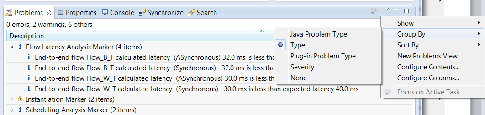
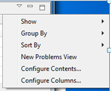
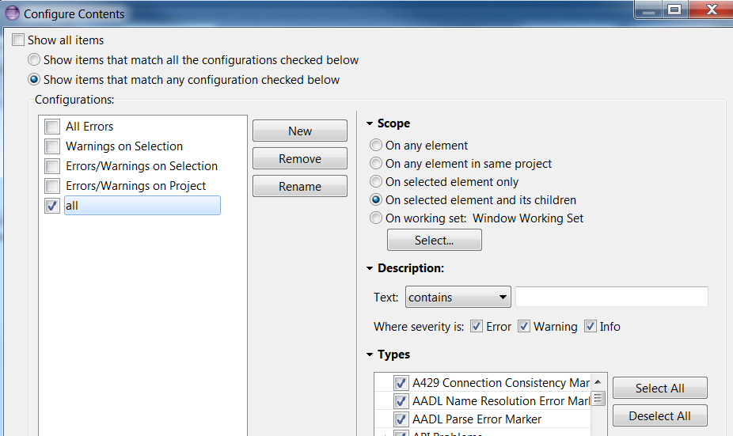
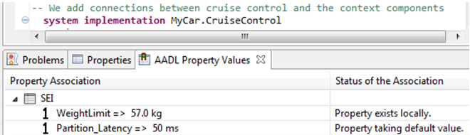

OSATE2 Help is available in the Help menu under Help Content. It includes Getting started information, descriptions of Analysis and other Plug-ins, the AADL core language Reference Manual (Standard document), and a Frequently Asked Questions (FAQ) section.
Common practice in Eclipse is to offer commands in the menu bar at the top, offer them also in the tool bar as icons, and finally offer them in a context specific way within a view, such as the AADL Navigator or an editor, in a context menu. The context menu is invoked by selecting an item or placing the cursor and right-clicking the mouse. OSATE2 follows this user interface principle.
The Markers are typed and can be grouped by type. Each OSATE analysis uses its own type. You can change the default setting of group by Severity to group by Type. This will present the entries grouped by analysis.
By default Eclipse only shows errors. You want to change that setting to show warnings and information as well. You can indicate that you want to see those of the selected and contained resources rather than all in the workspace. Select Configure Contents…
In the dialog box add a new Configuration (which I call All in context) and make sure Error, Warning, Info are checked. For Scope you select On selected element and its children. Note that you can define additional filter configurations, e.g., only certain Marker types.
Marker Report Generator: We have added a report generator for the content of the Problem view, i.e., the collection of markers. With the AADL Navigator as active window, select Report Generator Settings in the OSATE menu to set up the report content. Then select Generate Marker Report to produce an HTML based report.

You can double click on the tab of a view, e.g., the Problems view, and it will be shown full screen. Double clicking the tab again will go back to the previous multi-window layout. This will work for any view (window) in Eclipse.
If you accidentally closed a view, e.g., by clicking on the x in the top right corner, you can get the view back. You can also open additional views. You do so under Window/Show View/ and then select one of the shown views or click on Other…
AADL Property Values view: if you do not see AADL Property Values as a view in the bottom right, add it in. It lets you see the property values assigned to the selected model element in the editor. This view has editing capability.
OSATE2/Eclipse has Preference settings that can be changed by the user. A setting the user may want to change is in General/Startup. Enable Refresh workspace at Startup will ensure that OSATE updates its records to reflect any changes to the files in the workspace that may have occurred outside OSATE. NOTE: you can manually initiate a Refresh by selecting projects, folders, and files in the AADL Navigator and invoking the Refresh command in the File menu or in the context menu.